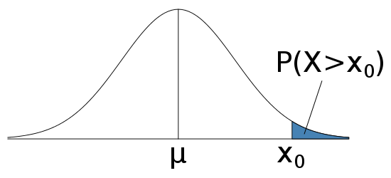
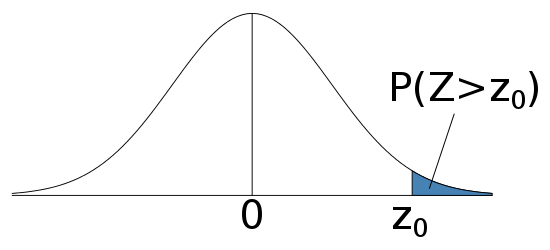

STAT 301 Lab
Lab 5: Normal Distribution
T.A.: Yixuan Qiu
Probability Statement
- We have some quantity $X$ that is a random variable
- $P(X>60)$ reads as "the probability that $X$ is greater than 60"
- You also need to know how to transform statements back to mathematical formulas
Normal Distribution
- Normal distribution helps us to calculate those probabilities
- It has a bell-shaped, symmetric, unimodal density curve
- A Normal distribution with mean $\mu$ and standard deviation $\sigma$ is usually denote by $N(\mu, \sigma^2)$
Typical Problems
- You are give that some quantity $X$ that follows a normal distribution with mean $\mu$ and standard deviation $\sigma$
- $\mu$ and $\sigma$ are given in concrete numbers
- Calculate
- $P(X<x_0)$ for some number $x_0$
- $P(X>x_0)$
- Find $x_0$ such that it is in the top $\alpha$% of the population
$P(X<x_0)$
- Calculate $z$-score $$z=\frac{x_0-\mu}{\sigma}$$
- Look into the Normal Table
Example
- Find the probability if $z=0.95$

- $z<-3.4$, $P(X<x_0)\approx 0$
- $z>3.4$, $P(X<x_0)\approx 1$
Graph
 
$P(X>x_0)$
- $P(X>x_0)=1-P(X<x_0)$
- Follow the previous slides to calculate $P(X<x_0)$, and then subtract that number from 1
Find $x_0$
- Look up Normal Table to find a $z$ with corresponding probability closest to $1-\alpha$%
- $x_0=z\sigma+\mu$
Sampling Distribution
- If we draw many samples from the population and calculate their mean values, then the mean also has a distribution
- If population follows Normal distribution $N(\mu, \sigma^2)$, then the mean follows $N(\mu, \sigma^2/n)$
- Sample means are less variable than individual observations
- For normal distribution, the density curve will be taller and narrower if it is less variable